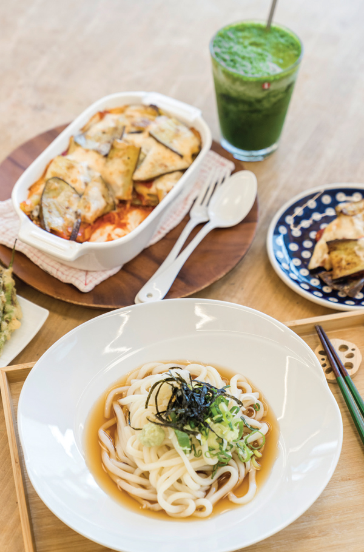
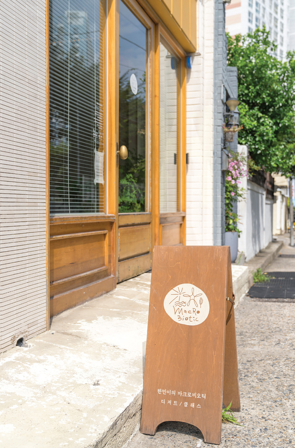
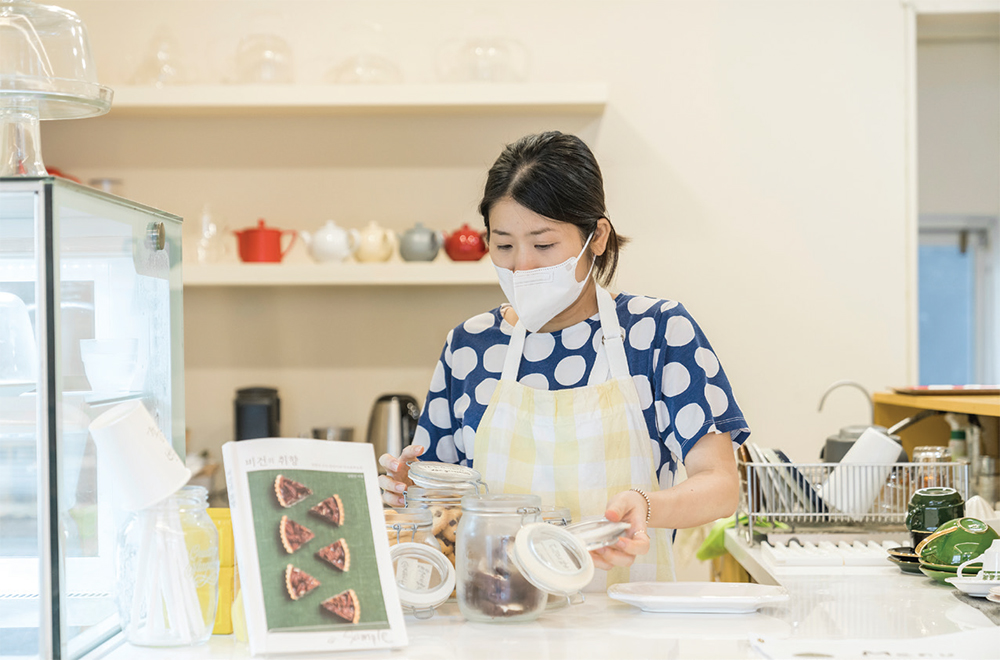
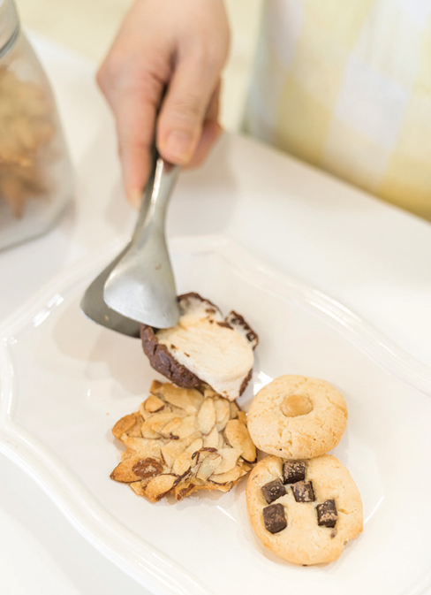
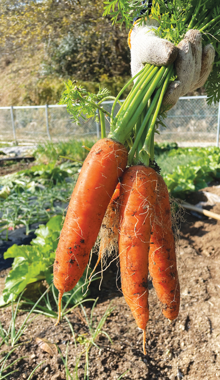
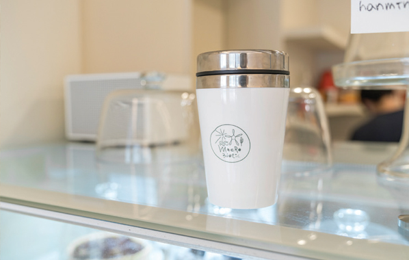
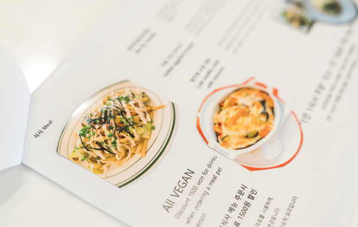
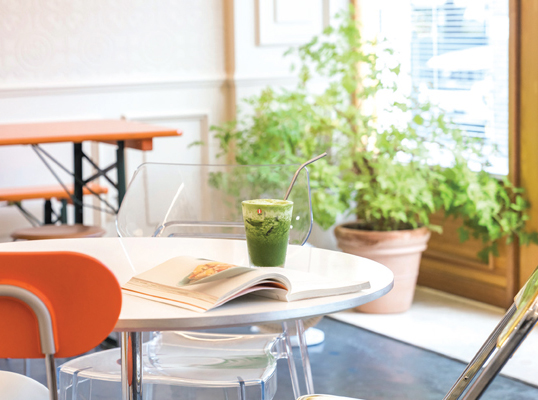
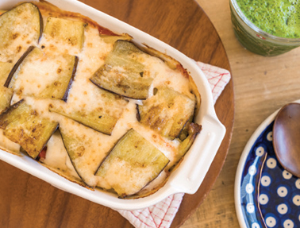
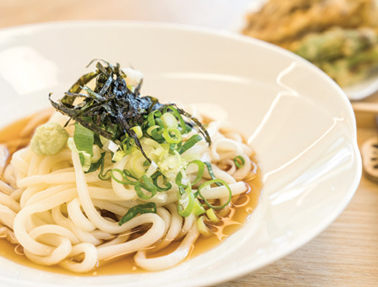

다른그림찾기
EVENT
두 눈 크게 뜨고
두 사진 속 다른 부분을 찾아주세요!


계절마다 옷을 바꿔 입듯, 계절마다 먹어야 하는 음식도 다르다. 봄에는 봄나물, 여름엔 감자와 풋고추, 가을엔 무와 배추, 겨울엔 시래기를. 부산 광안리 해수욕장 인근에 위치한 ‘한민이의 마크로비오틱’은 계절에 어울리는 레시피로, 건강한 상차림으로 손님들을 맞이한다.

2019년 2월, 광안리 조그마한 골목에 오픈을 했습니다. 마크로비오틱 자연식 비건 요리와 베이킹 수업도 같이하고 있어요. 한마디로 이야기하면 비건식당&카페입니다.
마크로비오틱은 동양의 자연 사상과 음양 원리에 뿌리를 두고 있는 식생활법입니다. 유기농 곡류와 채식을 중심으로 식사를 하는 것을 말하죠. 저는 2013년부터 마크로비오틱 클래스를 운영하고 있는데요. 거기에 제 이름을 붙였어요. 제 이름이 김한민이거든요.
앞서 말씀드린 것처럼 제가 마크로비오틱 자연식 비건 요리 연구를 하며 클래스를 운영해요. 클래스를 하다 보니 그런 생각이 들더라고요. 소수의 사람들이 아닌 많은 분에게 건강한 자연식 비건 요리를 선보이고 싶다는 생각이요. 그래서 비건식당&카페를 오픈하게 되었습니다.

콩고기, 콩햄, 대체육이 아닌 자연식으로 요리를 만드는 것에 중점을 두었어요. 제철에 나는 자연 재료만으로도 맛있고 건강한 음식을 만들 수 있거든요. 디저트 메뉴도 그렇고요. 자연에서 나는 재료 그대로 맛을 내기 위해 연구하고 있습니다.
작게 텃밭을 가꾸고 있는데요. 보통 거기서 나고 자란 채소들을 가지고 요리를 합니다. 텃밭의 재료가 부족하면, 자연드림이나 한살림 같은 유기농 매장 재료를 최대한 사용하고 있어요.



모든 메뉴에 심혈을 기울여요. 그렇기 때문에 어떤 메뉴에 ‘공을 더 들인다’라고 말을 할 순 없을 것 같습니다. 음식이든, 디저트 메뉴든 소스든 직접 만들어서 사용하거든요.
시간이 흐르는 대로, 계절이 흐르는 대로 내 몸 속도 같이 움직이게 되거든요. 그렇기 때문에 몸의 밸런스가 무너질 확률이 줄어들죠. 밸런스가 알맞게 유지되면, 건강한 생활을 할 수 있어요.
쓰레기를 최소화하기 위해 노력하고 있어요. 매장에서는 스테인리스 빨대를 사용하고요. 포장 용기나 비닐봉투도 생분해 봉투를 사용하고 있답니다. 어쩔 수 없는 경우를 제외하고 저희 음식과 디저트는 매장에서 바로 드시는 게 가장 신선하고 맛있어요.
비건을 시작하는 분들을 보면 여러 가지 계기가 있더라고요. 편안하게 했으면 좋겠어요. 많은 분이 비건을 실천하면서 마치 종교적 신념처럼 지키지 않으면 “마음이 불편하다”라고 하시더라고요. 비건은 그런 게 아니거든요. 자기가 할 수 있는 만큼 하면 된다고 생각합니다.
별것 없습니다. 다만, “한민이의 마크로비오틱에서 판매하는 모든 것들은 믿고 먹을 수 있다”라고 말씀해 주시는 분들이 늘어났으면 좋겠어요. 그거 하나면 충분합니다.

주소 부산 수영구 수영로522번길 41 1층
인스타그램 @hanmin_macro
(매주 월, 화 정기휴무)
*영업 스케줄 매주 월요일, 인스타그램 확인

국산콩 건두부, 유기농 양파, 무농약 새송이를 넣어 만든 수제 토마토소스에 구운가지, 삶은 감자, 라자냐면을 차례대로 넣고 마지막에 두유소스로 마무리해 오븐에 구운 요리.

직접 만든 비건쯔유(자연드림 국산 콩간장 사용), 쫄깃한 우동면, 무염산 유기농 김, 파, 유기농 무에 쯔유소스를 부어 먹는 요리.
한민이의 마크로비오틱에는 정해진 메뉴가 없다. 그 이유는 제철마다 메뉴가 계속 변하기 때문. 봄, 여름, 가을, 겨울 그 계절에 맞는 식재료를 이용해 선보이는 요리를 먹어보고 싶다면 한민이의 마크로비오틱에 가보자.